Weaving activity to weave love to the Heart of the Heart. It is an activity organized for students during the first semester, where kindergarten year 2 and kindergarten year 3 will welcome the children pre-kindergarten class and Kindergarten Year 1 to create love, warmth, and feel safe and have confidence in coming to school.
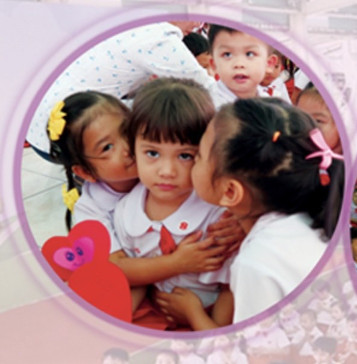In the academic year 2019, the Early Childhood Education Department organized an activity on Wai Kru Day for all early childhood students. In order to teach students to be aware of morality, gratitude, and having respect for adults. The activities consisted of a ceremony to pay respect to the teachers and activities in the classroom to see the importance of education and gratitude.
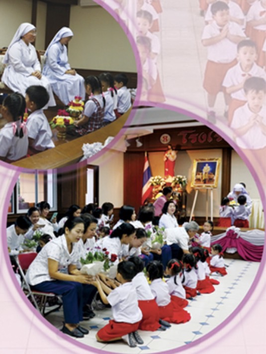Good boy certificate awarding ceremony Held on a monthly basis The teachers of Kindergarten Year 1 to Kindergarten Year 3 will select children with good behavior, kindness, etc. Once a month to be good children and receive certificates from the management.
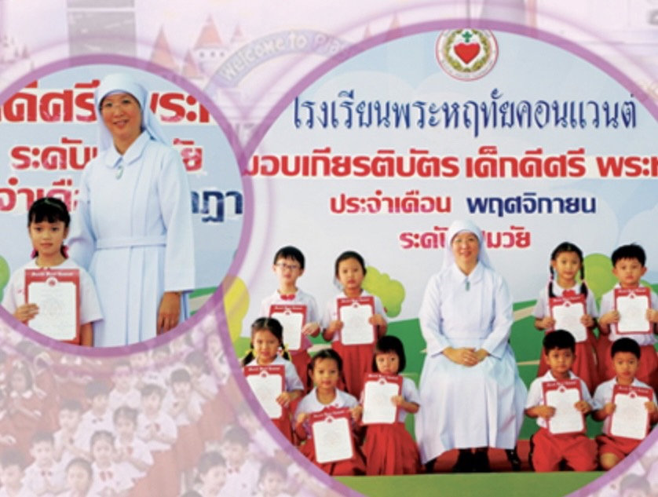The candle offering activity was organized to give students the opportunity to Get direct experience in the practice of Buddhists by offering food to monks with the monks who were invited by the school. In order to teach students how to give and donate. In addition, the school has encouraged students to make merit on the Buddhist Lent day by donating factors. Everyone gathered to offer Thai Dharma Jatukhat amulets in the courtyard of Pitiporn and bring them to the temple.
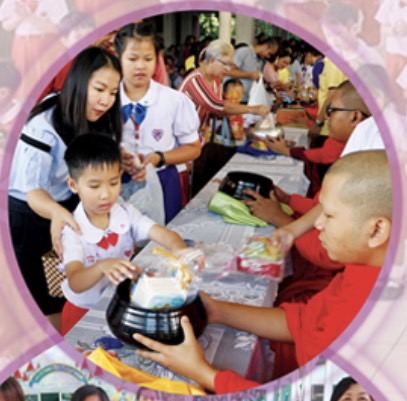Organizing activities to celebrate the birthday King Rama 10 in the academic year 2019, the school arranged a blessing to His Majesty at the Pitiporn courtyard by representatives of administrators, representatives of teachers, and representatives of students paying homage to Phan Phum Ngern Phumthong, representatives of teachers, representatives of students, said blessings to show loyalty to him.
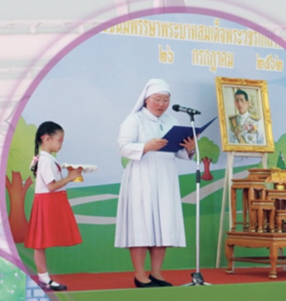In the academic year 2019, the Department of Early Childhood Education organized Mother's Day activities. The ceremonial session was held in the Centenary Building Auditorium. The ritual was performed by kindergarten year 3 students and representatives of teachers. The students speak to gave their blessings. Then the students danced to offer blessings. Representatives of Kindergarten Year 3 students expressed their feelings on Mother's Day. The mother then joins in activities with the children in the classroom, helping to make simple snacks such as jam bread.
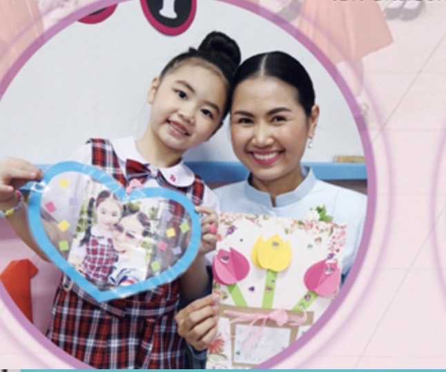little science day activities, it is an activity that encourages students to learn by themselves. Known for reasoning and analyzing. Learn to observe, compare, and have fun doing it yourself.
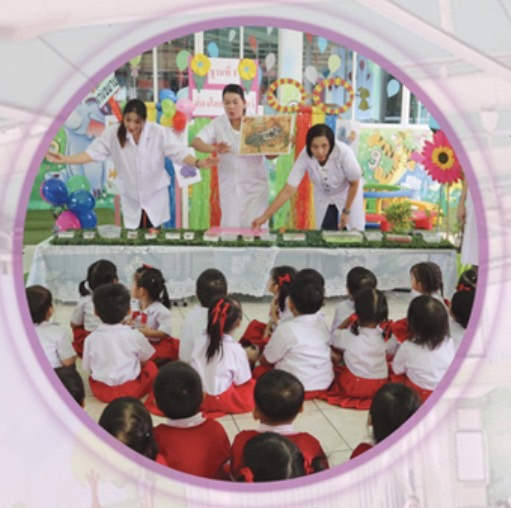In the academic year 2019, the Department of Early Childhood Education arranged for students to go on a field trip at Siam Ocean World to create an off-site learning experience. In this study tour students gain knowledge about a wide variety of marine animal , create happiness, fun, and have interactive activities among classmates.
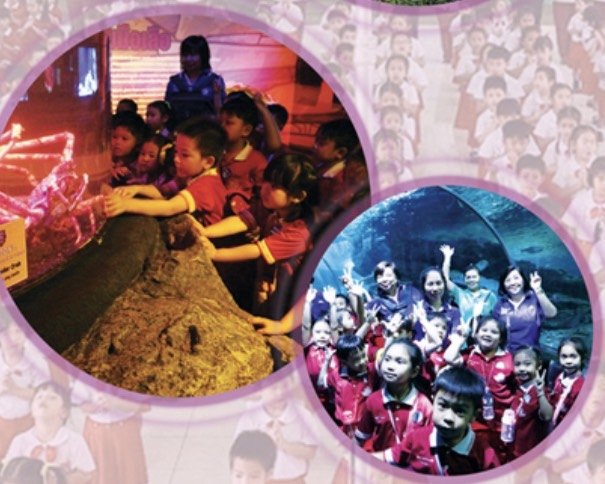Sport activities 2019 is an activity that encourages students to see the value of sports, be kind, have unity, and most importantly, know defeat, win, and forgive.
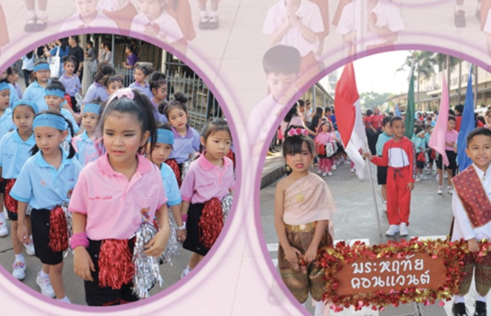Father's Day activities are held every year. To allow students to have the opportunity to do activities with father in the classroom, such as making snacks with father, Serve to father , Give gift card to father and bowing to show love Respect and Gratitude to the Blessed Father.
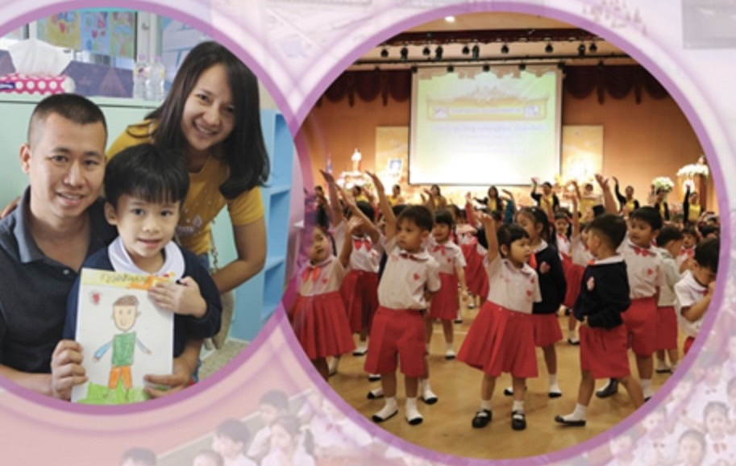Kindergarten talent activities, it is an activity that promotes the development of students. To the full potential by giving students the opportunity to have the courage to express themselves with pride in their own abilities.
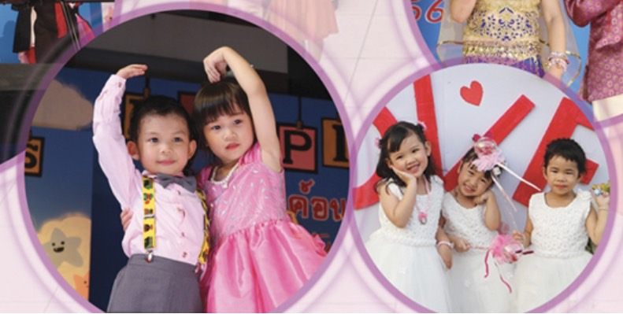